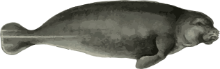
Ламантин
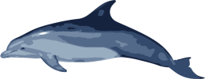
Погружение афалины
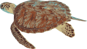
Зелёная черепаха
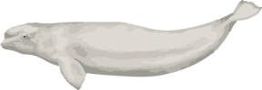
Белуха
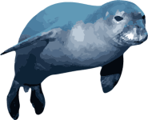
Морской лев
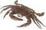
Бархатный краб
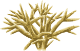
Оленерогий коралл
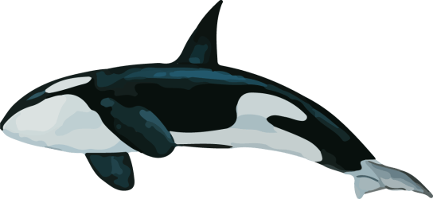
Косатка
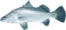
Баррамунди
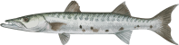
Большая барракуда
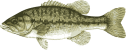
Пятнистый окунь
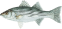
Полосатый лаврак
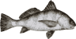
Чёрный барабанщик
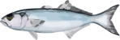
Луфарь
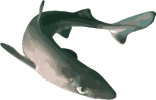
Катран
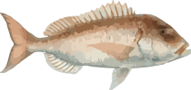
Зубан
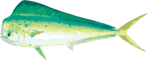
Большая корифена
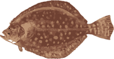
Камбала
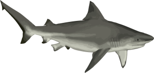
Тупорылая акула
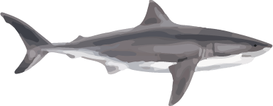
Большая белая акула
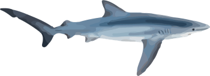
Синяя акула
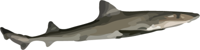
Австралийская кунья акула
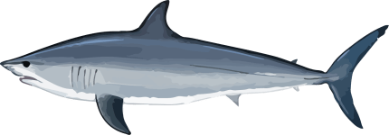
Акула-мако
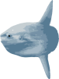
Рыба-луна
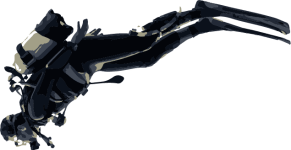
Человек
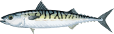
Атлантическая скумбрия
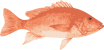
Королевский луциан
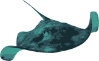
Фиолетовый хвостокол
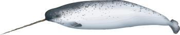
Самое глубокое погружение нарвала
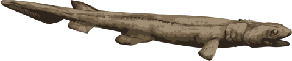
Плащеносная акула
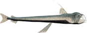
Хаулиод
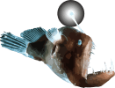
Глубоководный удильщик
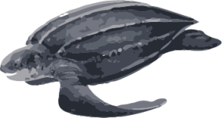
Кожистая черепаха
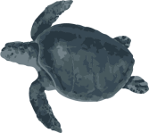
Оливковая черепаха
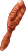
Морское перо
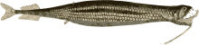
Рыба-дракон
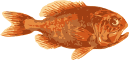
Атлантический большеголов
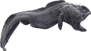
Угревидная зубатка
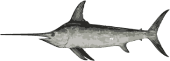
Меч-рыба
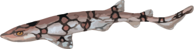
Цепная кошачья акула
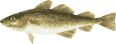
Атлантическая треска
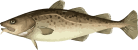
Тихоокеанская треска
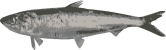
Европейская сардина
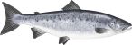
Атлантический лосось
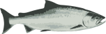
Чавыча
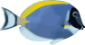
Синий хирург
Рыба-клоун
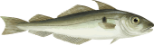
Пикша
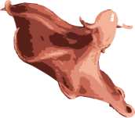
Адский вампир
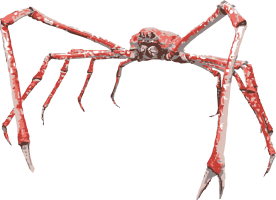
Японский краб-паук
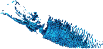
Кальмар-светлячок
Погружение кашалота
Краб-йети
Большая красная медуза
Кальмар-самоцвет
Кальмар-какаду
Фронима
Коралл «жевательная резинка»
Гигантский изопод
Целакант
Антарктический гигантский кальмар
Акула-домовой
Химеры
Чёрный живоглот
Морской чёрт
Гигантский осьминог
Шестижаберная акула
Погружение императорского пингвина
Погружение морского слона
Северный плавун
Лептосерис
Гигантактис
Большеглазый тунец
Бамбуковый коралл
Наутилус
Рыба-топорик
Сельдяной король
Гигантский трубчатый червь
Телескопический осьминог
Малоротая макропинна
Кальмарочервь
Морской ангел
Marrus orthocanna
Чешуеногий моллюск
Червь рода Vigtorniella
Лобстер с грозными клешнями (Dinochelus ausubeli)
Актиния-мухоловка
Морской конёк-тряпичник
Рыба «безголовая курица»
Чёрный палтус
Королевский краб
Гренландская полярная акула
Рыба-капля
Червь-зомби
Белый медведь
Ламинариевые водоросли
Погружение толстоклювой кайры
Морской жёлудь
332 метра — наибольшая глубина, на которую когда-либо погружался человек с аквалангом. Рекорд установил Ахмед Габр в 2014 году.
Солнечный свет не проникает на такую глубину.
Многие глубоководные организмы приспособились к данной среде, самостоятельно излучая свет — явление, известное как биолюминесценция.
Нарвалы ныряют на такую глубину до 15 раз в день в поисках пищи.
Японский краб-паук — самый крупный из известных крабов. Размах его ног достигает 3,8 м.
Считалось, что целакантовые вымерли, пока в 1938 году не были обнаружены живые экземпляры.
Кожистая черепаха — древнейший вид морских черепах.
Сельдяной король может вырастать до 11 м в длину.
Шестижаберные акулы проводят день на глубине, а ночь — на мелководье. Их можно встретить по всему миру.
Телескопические осьминоги почти полностью прозрачны и обладают уникальными выступающими глазами.
У малоротой макропинны прозрачная голова, благодаря которой её глаза улавливают больше света.
Чёрные живоглоты могут заглатывать рыбу целиком, даже если она гораздо крупнее их самих!
Адские вампиры питаются морским снегом — органическими частицами, опускающимися из менее глубоких вод.
«Безголовые куры» — это морские огурцы с похожими на крылья плавниками, позволяющими им плавать.
Антарктический гигантский кальмар — крупнейший из известных видов кальмаров. Он может достигать 10 метров в длину и весить до 700 кг.
Атлантический большеголов может жить до 200 лет. Глубоководные организмы часто отличаются долголетием.
В морских глубинах пища встречается редко, но их обитатели к этому приспособились - один гигантский изопод в неволе прожил пять лет без еды.
Многие виды глубоководных организмов используют красный цвет в качестве маскировки, поскольку по мере погружения на большую глубину он первым исчезает из спектра.
Акулу-домового называют «живым ископаемым», поскольку она является единственным сохранившимся видом рода, существующим уже 125 миллионов лет.
Это кальмар или червь? Червь.
Морские ангелы — величественные морские моллюски, которые передвигаются с помощью «крыльев».
Чешуеногий моллюск получил своё название благодаря железосодержащим пластинкам на ноге и раковине, которую он строит с использованием сульфида железа.
Глубоководные удильщики привлекают добычу в темноте крупной светящейся приманкой.
Гигантские трубчатые черви получают питательные вещества из гидротермальных источников.
Гидротермальные источники образуются, когда морская вода проходит сквозь раскалённые вулканические породы. Они выделяют тяжёлые металлы, токсичные для большинства животных.
Но даже в таких экстремальных условиях приспособленные к ним организмы находят возможность выжить.
Крабы-йети обитают у гидротермальных источников.
Полуночная зона
Сумеречная зона
Большерот
Бокоплавы
Патагонский клыкач
Мягкотелая китовидка
Медуза атолла
Саблезуб
Затонувший «Титаник»
Настоящие креветки
Погружение клюворыла
Рыба-ящерица
Губка-арфа
Осьминог Дамбо
Космическая медуза
Офиура
Морская свинья
Большеротая акула
Малакост
Рыба-тренога
Безликая рыба
Бразильская светящаяся акула
Стеклянная губка
Абиссальная рыба-паук
Это средняя глубина океана.
Но в некоторых местах он ещё глубже.
Гораздо глубже.
Клюворылы ныряют глубже всех других млекопитающих.
14 апреля 1912 года «Титаник» затонул, найдя последнее пристанище на глубине 3 800 метров.
Это самая глубокая точка Манильского жёлоба в Южно-Китайском море.
В тканях патагонского клыкача есть белки-антифризы, которые не дают ему замёрзнуть при температурах ниже нуля.
Большеротая акула — одна из крупнейших акул. Некоторые особи достигают 7 метров в длину.
Температура здесь близка к точке замерзания, и лишь немногие животные способны выжить при таком огромном давлении.
Эта акула выкусывает из тела жертвы куски мяса, похожие по форме на печенье.
Абиссальная зона
Гребневик
Ультраабиссальный морской слизень
Затонувший эсминец USS Johnston
Макрурус
Ошибневая рыба
Хитон
Вы опустились на глубину, равную высоте Эвереста.
Гребневики существуют уже 500 миллионов лет. Хотя они похожи на медуз, близкими родственниками они не являются.
Это самая глубокая точка жёлоба Пуэрто-Рико.
Это самая глубокая точка Зондского жёлоба в Индийском океане.
Эсминец USS Johnston затонул во время Второй мировой войны. Это судно находится на максимальной глубине из когда-либо найденных затонувших кораблей.
На Луне побывало больше людей, чем в Абиссальной зоне.
Абиссальная зона в основном находится в глубоководных желобах.
Глубоководные желоба образуются в результате процесса, называемого «субдукцией», при котором тектонические плиты Земли сходятся и давят друг на друга.
Морские глубины могут быть очень одиноким местом.
Жизнь здесь встречается редко - экстремальные условия затрудняют выживание.
Но она все же возможна.
О жизни на таких глубинах известно очень мало. Почти каждая экспедиция открывает что-то новое.
Придонная зона
Ультраабиссальный бокоплав
Множество зондов и подводных аппаратов было потеряно при попытках достичь самых глубоких участков океана.
23 января 1960 года, примерно за девять лет до высадки на Луну, люди отправились туда, где прежде никто не бывал.
Двое мужчин, Жак Пиккар и Дон Уолш, на борту батискафа «Триест» медленно погружались в Марианскую впадину.
Они стремились достичь Бездны Челленджера — самой глубокой точки океана.
В батискафе использовалась система регенерации воздуха, которую позднее стали применять в космических аппаратах. Внутри прочной сферической кабины едва хватало места для двоих.
При чудовищном давлении морских глубин любая ошибка означала бы неминуемую смерть.
Во время спуска одно из оконных стёкол треснуло, и весь аппарат содрогнулся.
И всё же они продолжили погружение.
Даже на этой невообразимой глубине Жак и Дон видели за окном живых существ. Жизнь может сохраниться в самых невероятных условиях.
После 4 часов и 47 минут тревоги и клаустрофобии…
Они добились успеха и стали первыми людьми, достигшими самой глубокой точки океана.
Самая глубокая точка
0 ГЛУБИНА В МЕТРАХ

Морские глубины
Создано с . Автор: Neal Agarwal
Особая благодарность доктору Харри Петтитт-Уэйду за помощь в редактировании и отзывы.